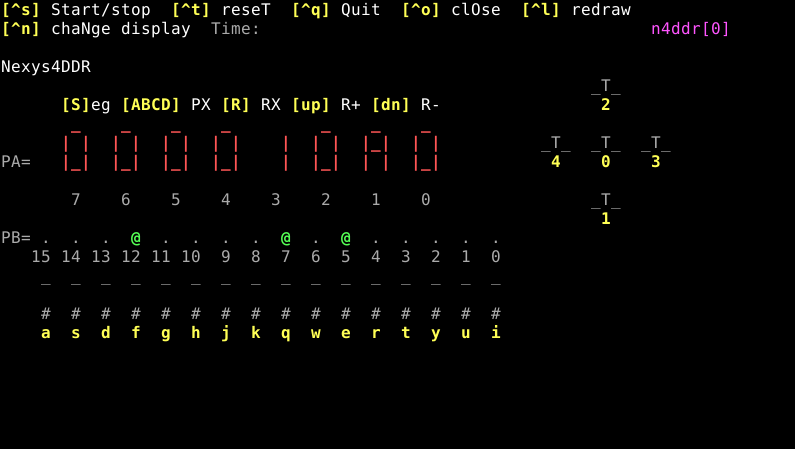

A p1516 és a p2223 processzorokkal felépített számítógépek programozását és használatát segíti a p12dev fejlesztőrendszer. A csomag tartalmazza a hardver leírását Verilog HDL nyelven, valamint a szoftver fejlesztéshez szükséges eszközöket. A kész rendszer szimulálható hardver, vagy utasítás szinten, illetve megvalósítható különféle FPGA kártyákon. Computers built with the p1516 and p2223 processors are programmed and used with the p12dev development system. A package contains the hardware description in Verilog HDL and the tools for software development. The finished system can be simulated at hardware or instruction level, or implemented on various FPGA boards.
Töltsük le a csomagot tartalmazó ZIP fájlt (p12dev-X.Y.Z.zip) a következő címről: Download the ZIP file containing the package (p12dev.zip) from the following address:
https://github.com/danieldrotos/p12dev/releases/latest
majd csomagoljuk ki egy tetszőleges könyvtárba, ezzel a telepítés kész. then unpack it into a directory of your choice, the installation is now complete.
A fejlesztőrendszer használatához szükséges egyéb szoftverek a következők: Following softwares are required to use the development system:
Mivel a rendszerre való fejlesztési folyamat alapvetően assembly nyelvű szoftver fejlesztésből áll, célszerű lehet egy olyan szövegszerkesztőt is telepíteni (pl. egy IDE szoftvert), amely ehhez megfelelő támogatást nyújt (pl. VS-Code, CodeBlocks, Geany, stb.). Since the process of developing a system is essentially assembly software development, it may be appropriate to use a text editor (or an IDE) that has good support for such a development (e.g. VS-Code, CodeBlocks, Geany, etc.).
Egy szövegszerkesztővel nyissuk meg a fejlesztőrendszer könyvtárban található prj.mk nevű fájlt, és írjuk be a projektünk assembly nyelvű forrását tartalmazó fájl nevét: Look for the prj.mk file in the root directory of the development system and open it with a text editor. Enter the name of your assembly source file, like:
PRG = sw/progs2/counter3
a PRG paramétert tartalmazó sorba, az =
jel után. A fájl nevében az útvonalat a fejlesztőrendszer gyökér
könyvtárához képest adjuk meg. A fájl nevében nem kell
feltüntetni az .asm kiterjesztést! Alapértelmezésként a
sw/progs2 alkönyvtárban található counter3 nevű példa program
neve van megadva.
in the line of PRG parameter, after the
= sign. Path in the file name sould be relative to root
directory of the package. Do not include the .asm extension in
the name. Name of the counter3 example is used from sw/progs2
directory by default. Change it to your app name.
Hozzuk létre a fájlt a megadott könyvtárban, a megadott névvel (és .asm kiterjesztéssel), és írjuk meg a programot. Create the assembly source file with the name you used above and place it in the correct directory. Write your code into the assembly source file.
A rendszer felépítését és a futtatás módját befolyásoló paraméterek két külön fájlban találhatók: prj.mk és hw/hwconf.v. Parameters affecting the system architecture and the way it runs are in two separate files: prj.mk and hw/hwconf.v.
INSTSA paraméter a prj.mk fájlban található. Értéke egy szám, amely a hardver szimuláció során lefuttatandó CPU utasítások számát definiálja. A megadott számú utasítás után a szimuláció leáll. The parameter is located in prj.mk file. It's value is a number, specifying number of CPU instructions to simulate during hardware simulation. Simulation will stop after running specifid number of instructions.
CPU_TYPEA paraméter a hw/hwconf.v fájlban található. Az értéke az adja meg, hogy a számítógépbe p1516, vagy p2223 típusú CPU kerüljön-e. A p1516 CPU használatához az értéket 1-re, míg a p2223-hoz 2-re kell állítani. Parameter is in hw/hwconf.v file. It specifies type of the CPU included in the computer. Value 1 selects p1516 type of CPU while value 2 selects p2223.
COMP_TYPEA paraméter a hw/hwconf.v fájlban található. Az értéke a rendszerbe kerülő számítógép (computer) típusát adja meg. A v1 típusú számítógép használatához az értéket 1-re, míg a v2 típushoz 2-re kell állítani. Parameter is in hw/hwconf.v file. Value of this parameter selects type of the computer. Type v1 computer can be selected by set this parameter to 1. Value of 2 selects type v2. Please note, that type v1 is now obsolete.
AWA paraméter a hw/hwconf.v fájlban található. Az értéke a CPU-hoz kapcsolt memória cím busz bemenetének mérete bitekben. A memória kapacitása így 2AW szó (minden szó 32 bit) lesz. Alapértelmezés szerinti értéke 17, ami 128 Kszó memóriát eredményez, ez a legnagyobb felhasználható méret az implementációhoz használt FPGA kártyák esetében. Parameter is in hw/hwconf.v file. Value of this parameter specifies the width of the address bus of memory that is connected to the CPU. The capacity of the memory will be 2AW word. Use of value 17 defines 128 Kword memory which reflects the memory size available on FPGA boards.
A p2223 processzoros, v2 típusú számítógépnek a memóriájába be van töltve a PMon monitor program. Ez lehetővé teszi a gép kezelését akkor is, ha nem töltünk be felhasználói programot, illetve biztosítja a felhasználói program cseréjét. A PMon elindulását a memória 0 címén található JMP 0xf03c utasítás biztosítja (kódja: 0x01f2f03c). A monitor helyett a felhasználói programmal is indíthatjuk a gépet, ha a szoftvert úgy írjuk meg, hogy az első utasítása a 0 címre kerüljön: PMon monitor program is already loaded into computer memory if you use v2 type of computer with p2223 processor. This allows you to operate the computer when no user program is loaded, and makes possible to load in new user program. PMon is started by a JMP 0xf03c instruction located at address 0 (code of it is 0x01f2f03c). You can start the machine with the user program instead, if you overwrite the JMP at 0 with your program's code by placing it at 0 with the following directive:
.org 0
Ezt a módszert hardver, és esetleg utasítás szintű szimuláció esetén célszerű használni. Ebben az esetben törekedjünk arra, hogy a program valamilyen funkciójával legyen lehetőség a monitorhoz való visszatérésre. A monitorba való visszatérést legegyszerűbben az 0xf000 című szubrutin meghívásával érhetjük el: This method can be usefull for hardware or instruction-level simulation. In this case you should provide some possibility to exit the user program and jump back to monitor. The easiest way to return to the monitor is call subroutine at 0xf000:
call 0xf000
Ennek hiányában az FPGA kártyán futó alkalmazói programot nem tudjuk lecserélni, új program betöltéséhez újra kell programoznunk az FPGA áramkört. A monitor elérésének további módjait annak leírásában találjuk. Without this, the application running on FPGA can not be replaced and you have to reprogram the whole FPGA. Further ways to access the monitor program are described in its documentation.
.org 1
akkor a programot a megfelelő monitor parancs kiadásával indíthatjuk (paraméterként az ORG direktívával megadott kezdőcímet használjuk): then your app can be started with appropriate monitor command (go), where you must use the address which was used in the .org directive:
g 1
A hardver szimuláció az áramkör kapu szintű szimulációja. A szimulációhoz egy verilog szimulátor szükséges, a fejlesztőrendszer az Icarus verilog szoftvert használja. A szimuláció több lépésből áll, az Icarus a tervet először szimulálható formára alakítja, “lefordítja”. Ehhez a lépéshez szükség van a számítógép memóriájának tartalmára is, tehát mindenekelőtt a futtatandó programot kell lefordítanunk és átalakítanunk a verilog számára szükséges formátumra. Hardware simulation means gate level simulation of the circuit. It requires a verilog simulator, the development system uses Icarus verilog software. Simulation takes several steps. First, Icarus converts the model into an internal form that is suitable for the simulation. This step needs the memory content, so we need to compile the software first to generate needed memory content file which the Icarus is able to read.
A második lépésben fut maga a szimuláció, amelynek
során a tesztelt áramkörre (vagyis a számítógépre) megfelelő
bemeneti jeleket kapcsolunk. A szimuláció az INSTS paraméterben megadott
számú CPU utasítás után leáll.
In second step the simulation will run when input signal
values are applied to input of the circuit. The simulation stops
when CPU executes as many instructions as specified in the NSTS
parameter.
A szimuláció az áramkörben megjelenő jelek értékét egy kimeneti fájlba írja (dump fájl), amelyet a harmadik lépésben megjeleníthetünk és kiértékelhetünk. A teljes folyamat lefuttatását egy Makefile vezérli, amelyet parancssorból kezelhetünk. The simulation writes out values of internal signals into an output file (dump file) which can be displayed in the third step. The whole process is controlled by a Makefile which can be used form command line.
Nyissunk meg egy parancsértelmező ablakot (pl. Powershell), és váltsunk a csomag gyökér könyvtárára. Pl. ha a ZIP fájlt az Asztal-ra csomagoltuk ki egy p12dev könyvtárba, akkor adjuk ki a: Open a command window (e.g. PowerShell on windows) and change working directory to root of the development system. For example, if the package is unzipped into p12dev on Desktop, enter:
cd Asztal/p12dev
cd Desktop/p12dev
parancsot. Ha a szükséges szoftvereket telepítettünk, a szimuláció és a megjelenítés a command. If the required softwares are installed, the simulation and displaying the result can be done with:
make
parancs kiadásával futtatható le. A szimuláció után elindul a gtkwave szoftver, amely a dump fájl tartalmát idődiagram formájában kirajzolja és lehetővé teszi a gép működésének vizsgálatát. command. After the simulaton, gtkwave softwer is started which displays content of the dump file on a time diagram.
A make parancs paramétere segítségével a folyamat egyes lépései önállóan is lefuttathatók: Using following parameters to make command, it is possible to run any step of the process separately:
make progs ; példaprogramok és a monitor lefordítása make sw ; a projektben megadott program lefordítása make hw ; a hardver lefordítása make sim ; a lefordított hardver szimulációja make show ; a dump fájl megjelenítése make clean ; a generált fájlok törlése
make progs ; compile examples and monitor make sw ; compile app of the project make hw ; compile hardware make sim ; simulate hardware make show ; show dumpfile make clean ; remove generated files
A gép számára szükséges bemeneti jeleket a tm.v (Verilog Test Module) fájl módosításával állíthatjuk elő. You have to modify the tm.v (Verilog Test Module) file to produce input signals for the computer, requied by the tested app.
Az utasítás szintű szimulációt az μCsim szoftver valósítja meg, természetesen az indítás előtt le kell fordítani a futtatandó programot. A futtatást és a szimulátor elindítását elvégezhetjük a fejlesztőrendszer gyökér könyvtárában a The instruction level simulation is performed by the μCsim software. Code of the application must be compiled before the simulation. Requied compilation and start of the simulator can be done by following command (issued in root directory of the development system):
make iss
parancs kiadásával. A fordítás után elindul a szimulátor, a memóriába betöltődik a projektben megadott program kódja és a monitor. A program futtatása elindul. Az μCsim mellett három terminál ablak is megnyílik, a fejlécük UART, cmd1 és cmd2 lesz. After compilation of the app, the simulator starts. The simulated memory is filled with the code of the project's app and the monitor. Besides μCsim (which runs in the background), three terminal windows open, titled UART, cmd1 and cmd2.
Az UART ablak a szimulált soros vonalhoz kapcsolódik. Ha a programot a monitor mellé fordítottuk le, akkor itt egy ENTER lenyomása után a monitor promptját (kettőspont) fogjuk látni. A monitor segítségével elindíthatjuk a programunkat a The UART window is connected to the simulated uart. When you compile your app by keeping monitor start instruction, and press ENTER in this window, the monitor prompt (colon) will appear. You can start your app with the following monitor command:
g kezdőcím g startaddress
parancs kiadásával, ahol a kezdőcímet hexadecimálisan kell megadnunk. where startaddress of the app must be entered in hexadecimal.
A cmd1 és cmd2 ablakok az μCsim parancssorai, itt adhatunk ki a szimulátornak parancsokat. A szimulátor leírását a The cmd1 and cmd2 windows are command consoles of the simulator, you can enter μCsim commands there. Documentation of the simulator is at:
címen olvashatjuk. A GPIO kezelésének egyik módja, hogy az egyik cmd ablakot függőlegesen felnagyítjuk legalább 34 sor méretűre, majd kiadjuk a GPIO can be handled in several ways, one is the use of interactive interface, which can be started by:
set con dport
parancsot. Ezután látni fogjuk a négy kimeneti és a két bemeneti portot. A bemeneti portok alsó 16 bitjét az alattuk feltüntetett billentyűkkel válthajuk át. command. Values of all GPIO port (2 inputs, 4 outputs) registers will appear (you should increase window size to at least 34 lines to make room for all). You can use displayed keys to toggle input port bits.
A szimulátorból való kilépéshez adjuk ki a kill parancsot az egyik cmd a blakban. To exit the simulator kill command can be used in a command window.
Az FPGA kártya be- és kimeneti eszközeinek megjelenítését a következő parancsok egyinének beírásával érhetjük el: Display the input and output devices of the FPGA card by entering one of the following commands:
set con n4ddr set con logsys set con boolean
annak megfelelően, hogy melyik FPGA kártyát szeretnénk a szimulációban kezelni. according to which FPGA card would you like to simulate.

A képen sárgával látható billentyűkkel vezérelhetjük a szimulátort, illetve a kártya bemeneti eszközeit (nyomógombok, kapcsolók). The yellow keys in the picture control the simulator and the card's input devices (push buttons, switches).
Az FPGA kártyán való megvalósításhoz a fejlesztőrendszerben kész Vivado projekteket találunk You can find ready to use Vivado projects in the package to implement the computer on FPGA boards:
típusú kártyákhoz, az hw/implement alkönyvtárban. A projektek a Vivado 2023.1 verziójával készültek, ezért minimum erre, vagy újabb Vivado-ra van szükség a használatukhoz. Az implementáció lefordításához szükség van a memória tartalmat definiáló fájlra, amit a PMon monitor és a mellette még betöltendő alkalmazói program lefordításával állíthatunk elő. in hw/implement subdirectory. The projects are made by Vivado version 2023.1, so you have to use this or newer version. Memory content file is needed to compile the implementation, which can be produced by compiling sw part of the package.
make sw parancsot. make sw command in p12dev directory.Lefordított bit fájlokat is használhatunk, ezek a PMon monitor programot, és alkalmazói szoftverként a counter3 példa programot tartalmazzák. A kész bit fájlokat a You can use precompiled bitfiles to program your board, they contain PMon monitor and the counter3 example as the user app. These bitfiles are available at:
https://github.com/danieldrotos/p12dev/releases/precompiled-bitfiles
címről tölthetjük le:
A Vivado elindítása után nyissuk meg a Hardware managert és programozzuk a kártyát a letöltött bit fájllal. Ezután a monitor program segítségével használhatjuk a számítógépet. After starting Vivado, open the Hardware manager and download selected bitfile to the board. After downloading, you can use the computer with the help of the PMon monitor.